Univariate Distributions
Categorical Variables
Congratulations, young witch! You have been selected to attend Hogwarts School of Witchcraft and Wizardry! You are both thrilled, and a bit afraid. Okay, you’re terrified. Why, you ask? Because you come from a long line of dark wizards. You know that running through your blood is a propensity for the sinister. If only you could avoid being sorted into the house of Slytherin!

What are your chances? How likely is it that you will be placed in Slytherin?
You are not an ordinary witch. Whilst your peers fancy themselves mystics of the highest order, you are rationale. Empirical.
You require data.
So, you hack in to the mainframe of Hogwarts’ computer and find exactly the sort of data you need.
Are you ready?
Here it is:
#> [1] "Ravenclaw" "Hufflepuff" "Slytherin" "Slytherin" "Ravenclaw"
#> [6] "Hufflepuff" "Ravenclaw" "Ravenclaw" "Gryffindor" "Hufflepuff"
#> [11] "Slytherin" "Gryffindor" "Slytherin" "Hufflepuff" "Ravenclaw"
#> [16] "Slytherin" "Gryffindor" "Gryffindor" "Ravenclaw" "Gryffindor"
#> [21] "Slytherin" "Ravenclaw" "Gryffindor" "Ravenclaw" "Ravenclaw"
#> [26] "Hufflepuff" "Slytherin" "Hufflepuff" "Slytherin" "Hufflepuff"
#> [31] "Slytherin" "Hufflepuff" "Gryffindor" "Hufflepuff" "Ravenclaw"
#> [36] "Gryffindor" "Hufflepuff" "Hufflepuff" "Ravenclaw" "Gryffindor"
#> [41] "Slytherin" "Ravenclaw" "Hufflepuff" "Slytherin" "Hufflepuff"
#> [46] "Slytherin" "Ravenclaw" "Slytherin" "Gryffindor" "Gryffindor"
#> [51] "Hufflepuff" "Gryffindor" "Hufflepuff" "Ravenclaw" "Ravenclaw"
#> [56] "Hufflepuff" "Hufflepuff" "Hufflepuff" "Hufflepuff" "Gryffindor"
#> [61] "Slytherin" "Slytherin" "Hufflepuff" "Gryffindor" "Ravenclaw"
#> [66] "Slytherin" "Slytherin" "Gryffindor" "Ravenclaw" "Slytherin"
#> [71] "Slytherin" "Gryffindor" "Hufflepuff" "Ravenclaw" "Hufflepuff"
#> [76] "Hufflepuff" "Hufflepuff" "Slytherin" "Hufflepuff" "Slytherin"
#> [81] "Hufflepuff" "Ravenclaw" "Hufflepuff" "Ravenclaw" "Gryffindor"
#> [86] "Ravenclaw" "Gryffindor" "Hufflepuff" "Hufflepuff" "Ravenclaw"
#> [91] "Hufflepuff" "Gryffindor" "Hufflepuff" "Gryffindor" "Ravenclaw"
#> [96] "Ravenclaw" "Ravenclaw" "Ravenclaw" "Slytherin" "Gryffindor"
...So…what are your chances of being assigned in Slytherin?
Go ahead. I’ll wait.
Alright, alright. I get it. There’s little chance you can make sense of the data above. Why? Because it’s not presented in a format that our brains can really make sense of. The “bandwidth” of our brains is limited. We can only really make sense of a small amount of information at a time.
Fortunately for us, there’s a way to “chunk” this information, as they say, or to condense the thousands upon thousands of datapoints into only a few.
Well, more specifically, only four:
Hufflepuff Gryffindor Ravenclaw Slytherin
We know there’s only four unique values one can be assigned to. It that’s the case, wouldn’t it make more sense to just count the number of times each person was assigned into each house?
So let’s do that:
| House | Frequency |
|---|---|
| Gryffindor | 231 |
| Hufflepuff | 278 |
| Ravenclaw | 228 |
| Slytherin | 247 |
Notice we added a column called “Frequency,” which is just an overly sophisticated way of saying “count.” So, according to the table, there were 231 students assigned to Gryffindor, 278 students assigned to Hufflepuff, 228 assigned to Ravenclaw, and 247 students assigned to Slytherin.
Column Sorting
If you’re unusually quirky, and perhaps a little OCD, you may have noticed the rows of the table are sorted alphabetically. But we could just as easily rearrange it alphabetically by the last letter:
| House | Frequency |
|---|---|
| Hufflepuff | 278 |
| Slytherin | 247 |
| Gryffindor | 231 |
| Ravenclaw | 228 |
Or, perhaps, by which house you prefer to be in:
| House | Frequency |
|---|---|
| Ravenclaw | 228 |
| Hufflepuff | 278 |
| Gryffindor | 231 |
| Slytherin | 247 |
You could really sort it any way you want, amiright? Why? Because there’s nothing inherent in the ordering of the houses. They are not ordinal variables.
By default, I tend to sort things by frequency.
| House | Frequency |
|---|---|
| Ravenclaw | 228 |
| Gryffindor | 231 |
| Slytherin | 247 |
| Hufflepuff | 278 |
Why do I sort by frequency? The table above tells you two pieces of information at a glance: the number in each house, and which houses have the most students. Yeah, they’re kinda the same information, but the above table organizes it better so it’s more readily apparent.
Make sense?
What you just did, without even knowing it, was summarize the univariate distribution of the dataset. WTF is a distribution?
A distribution of a variable is a description of which values occur and how frequently they occur.
In this case, the variable is house placement. The table is a description of how frequently each value occurs. Or, the table is a description of the distribution of house assignment.
Visualizing
Remember, our first line of defense against the statistical dark arts is visualization. How then can we visualize these data? There are two bad ways to visualize it: line charts and pie charts. And there’s one good way: a bar chart.
The term ‘data’ is plural. So, it’s not appropriate to say, “My data is funky.” You would say, “My data are funky.”
So, yeah, don’t mess that up.
Line Chart
Let’s look at that table again, shall we?
| House | Frequency |
|---|---|
| Ravenclaw | 228 |
| Gryffindor | 231 |
| Slytherin | 247 |
| Hufflepuff | 278 |
We have two columns. Each column kinda sorta represents a variable. It’s kinda sorta because frequency isn’t really a variable. Frequency is a characteristic of the variables. But we can “cheat” and pretend frequency is a variable.
So…how do we visualize two variables?
Hmmm. Remember back in algebra we learned about Cartesian graphs? Lemme jog your memory:

Look familiar?
A Cartesian graph is a way to display numbers in such a way that we can visualize patterns.
But, remember, we kinda sorta have two variables: house assignment and frequency. So let’s label the X-axis (i.e., the line that’s horizontal) with one variable, and label the Y axis (i.e., the line that’s vertical) with the other. How’s that sound?
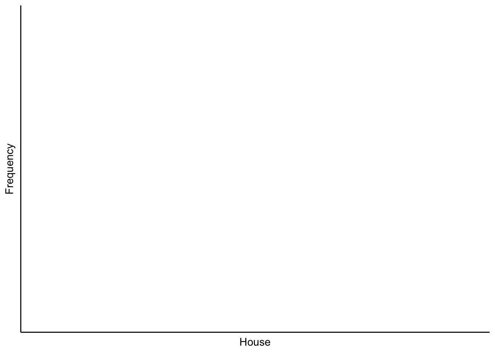
Now we can add what we call the “tick” marks and labels, which show possible values our variables can take:
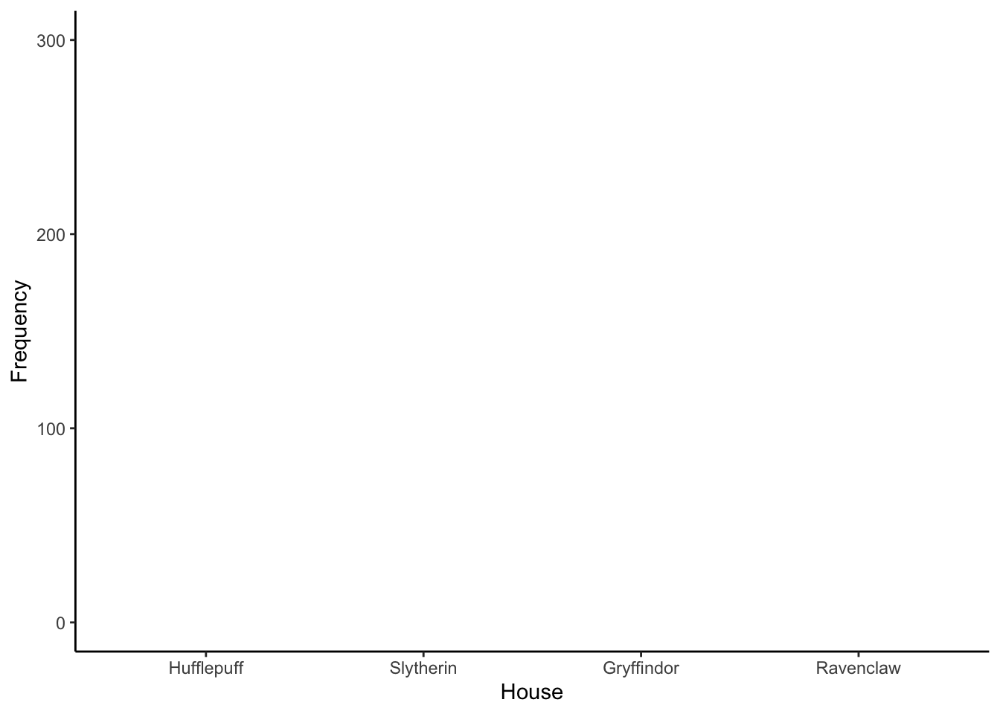
Now that we have our tick locations, let’s go ahead and put dots for every value in our table
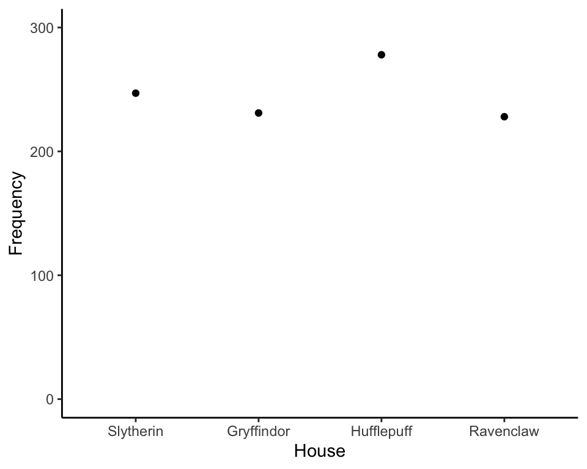
A line graph simply connects the dots:
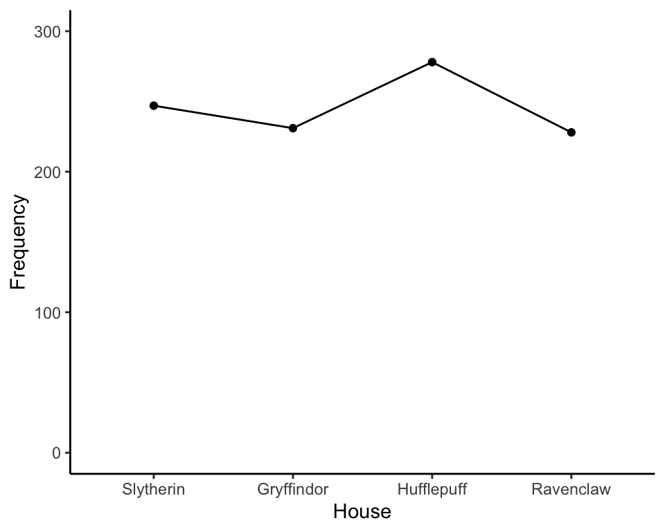
This is what we call a line chart. (Any ideas why? Don’t think too hard.)
Line charts simply represent the frequency of each category as a dot, then connect the dots with lines. Or, we could just as easily remove the dots:
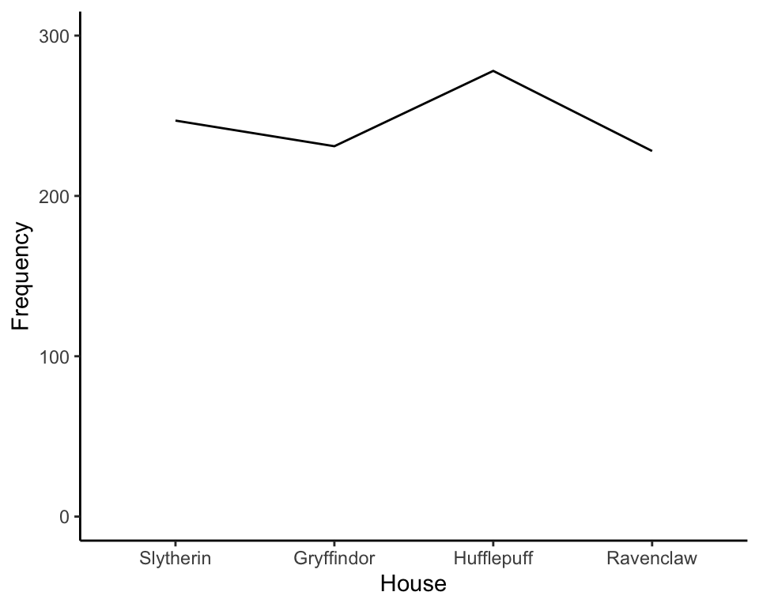
Remember how I said line graphs are kind of useless? Why, you ask? Our brains are wired to interpret lines a certain way. When we view a line, we see it as a trend (Zacks & Tversky, 1999).
Allow me to demonstrate. Let’s say we sorted by frequency, then displayed that as a line graph:
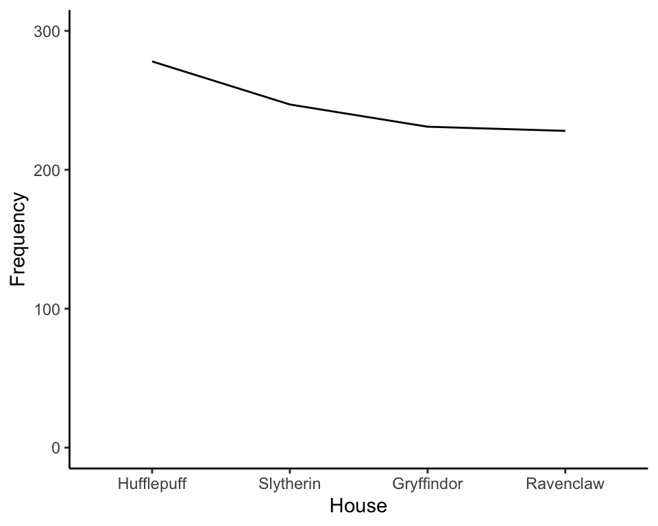
Your mind will automatically tell you there’s a downward trend.
Trend of what? What is trending downward? Frequency. Frequency of what? Um…er…House’ness?
Because the points are connected, your brain wants to understand what is trending. But nothing’s trending because the order is arbitrary.
So, in short, it’s a bad idea to use lines to display data when the x-axis contains categorical information.
Before we move on to the next section, let’s pause for a joke. This is a long one, but it’s pretty funny.
A man once went to buy a horse. He found the horse he liked, and the man decided to take the horse for a ride. He tried to get the horse to go, but it wouldn’t budge.
“How do I get it to move?” the man asked.
“That’s a unique horse. She responds to verbal commands, not nudges. To get her to walk, just say ‘Whoa.’”
With a “whoa,” the horse began moving.
“How do I get her to trot?” the man asked.
“Say, ‘whoa, whoa,’” said the trainer.
“And to gallop?”
“You say, ‘Hallelujah.’”
“And how do you get it to stop?” asked the man.
“You say amen.”
“Huh,” said the man. “That’s odd. I’ll take her.”
So the man buys this unique horse. That evening he takes it for a stroll. With a “whoa,” the horse starts to trot, but the horse sees a snake and veers far off the path toward a cliff.
Struggling to gain control, the man says, “Whoa whoa whoa!”
Oops.
The horse goes faster, right toward the edge of the cliff!
But the man can’t remember how to make the horse stop. They near the edge of the cliff and the man says an audible prayer. “Dear God. Spare my life. Stop this horse! Amen.”
The horse suddenly stops, only inches from the edge of the cliff.
The man let’s out a massive breath. “Hallelujah.”
Pie Charts
Ya’ll ever seen a pie chart? Pie charts are bad. Why? Well…pie charts make me hungry. And I’m trying to lose weight.
So that’s bad.
But there’s a more scientific reason to not like pie charts. Suppose we have the pie chart shown below, which lists which sort of cake people prefer. (I know. it’s cruel to show cake preferences in pie charts).
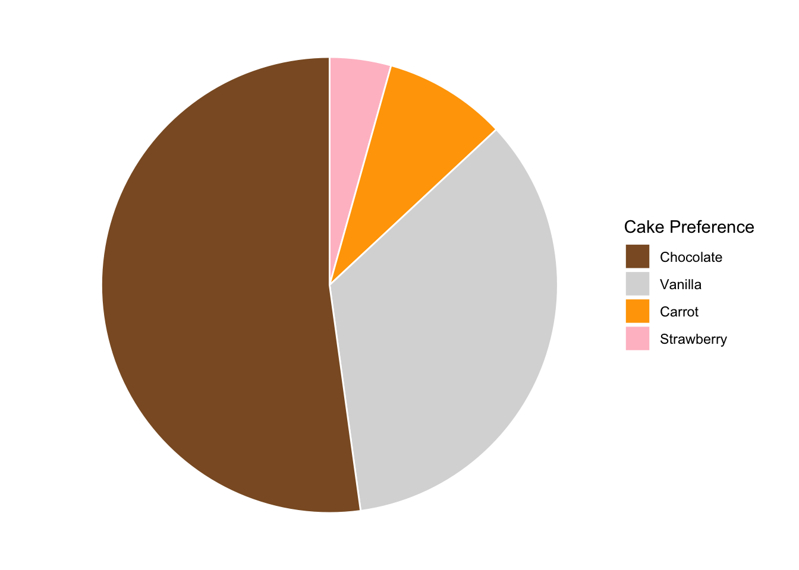
Now, riddle me this: proportionally, how many more people prefer chocolate than carrot cake? (Honestly, who was the genius who thought putting vegetables in a cake was a good idea? What’s next? Okra cake???) Is it 4x? 8x?
Now let’s show that same information as a bar chart:
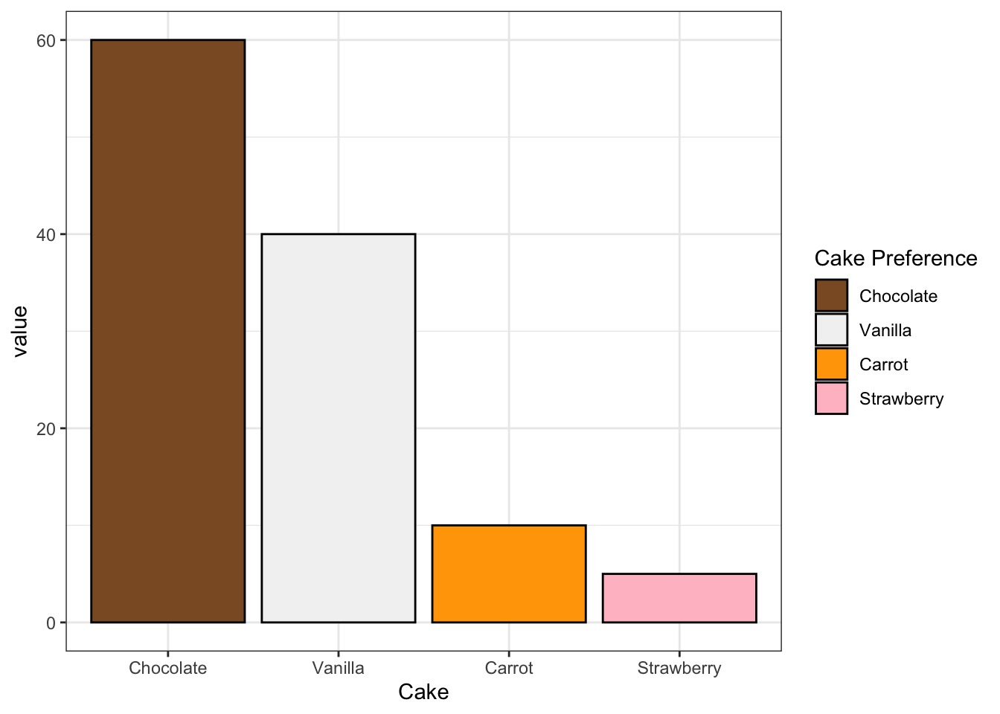
Now what do you say? More than likely, your brain will choose a much larger number as a bar chart than as a pie chart. Why? It turns out our brains have a really hard time detecting differences in area, but are really good at determining differences in height (Cleveland and McGill 1984).
It gets even worse when trying to tell differences in volume. I once purchased mulch for my garden from the Home Depot. As I stood before a tower of mulch, I mentally tried to estimate how much mulch I’d need to buy. The bags looked tiny! So I bought 50.
And ended up returning 40 of them.
Why? Because (a) I didn’t plan ahead, and (b) our brains are not wired to estimate volume or area. But we’re pretty good at estimating height. So, we should probably avoid barcharts if we’re interested in comparing two slices of the pie.
Bar Charts
In review, line charts suck because they deceive you into believing there’s some sort of underlying trend. Pie charts suck because our brains aren’t very good at deciphering differences in area. Bar charts are the best tool we have to visualize differences in frequencies between category values.
With that, here’s the house dataset displayed as a barchart, both sorted alphabetically (left) and by frequency (right). I prefer to sort by frequency unless there’s an inherent order, that way I can tell at a glance which groups have the highest frequency.
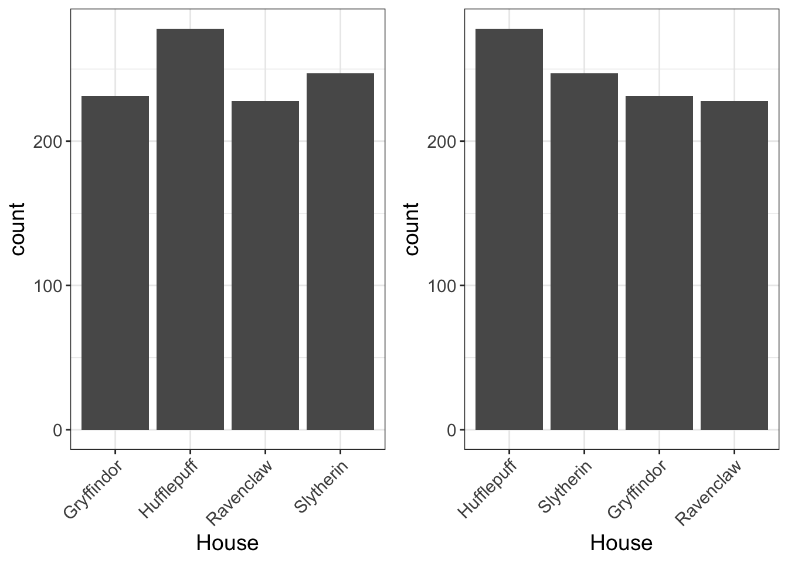
Interpreting Bar Charts
Alright. Now that we’ve settled on the best approach to visualizing categorical variables. What now? First, it’s important to ask yourself the following question: what does this MEAN???
I suppose it seems kinda obvious. Of course you should be asking yourself what a graph means. But I have seen too many students look at a graph and make statistical statements (e.g., Group A has 2x more people in it than Group B), but do so without considering what it means about our own data (e.g., if the groups were randomly assigned, the groups should be equal!).
Remember, a graph is a visual representation of something in the real world, whether it be political affiliation, Hogwarts class, gender, or age. Let’s not pretend the graph itself is the thing we’re studying. We’re studying characteristics. We’re studying data. We’re studying a research question. So don’t turn off that part of your brain that is interested in substantive conclusions when looking at a graph.
Sometimes the data just don’t make sense. I once had a colleague who was studying sexual behavior among adolescents. One 15-year-old was asked how many sexual partners they had had.
1,000.
Right. You wish.
Like in this example, sometimes the numbers we have are not to be believed.
There are, as I see it, four potential data problems to look out for:
- redundant labels
- unknown labels
- swapped labels
- small sample sizes.
There may be more, but I’m too tired to think of more.
So, let’s talk about what all these mean and give some examples.
Redundant Labels
Let’s say you’re interested in studying social dynamics among high school students. To do so, you solicit their class standing (Freshman, Sophomore, Junion, and Senior). But, partway through your study, you switch from Qualtrics to Surveymonkey. After all, nothing screams “professional researcher” like a Surveymonkey link. (Bonus professional points if you send it from a personalize email, like naughtyhottie78@hotmail.com).
No big deal, right? You can merge your data from Surveymonkey to Qualtrics. So you do. Except you forget to capitalize Freshman. If we plotted a barchart of our data, we might see something like this:
Figure 1: Illustration of ‘Redundant Labels,’ a problem to look out for when plotting bar plots.
Obviously, aside from a nasty case of improper capitalization, there’s no difference between “Freshman” and “freshman,” and we should treat the two as the same. When you plot it, it gives you a chance to see it quite readily.
Unknown/Unexpected Labels
Alright, story time. Although, I must issue a trigger-warning: If you believe in Santa Clause, don’t read this.
I have a sister that is 11 years younger than me. Before she was old enough to realize Santa Clause didn’t feel safe enough to visit the slums in which we lived, my parents assigned me and my younger brother to wrap the gifts from “Santa.”
Never trust devious teenagers with the task of wrapping presents from Santa.
Honestly though, it started as an honest mistake. My little brother, instead of writing, “From Santa,” accidentally wrote, “From Satan.” He (and I) thought it was hilarious. So, of course, we labeled the remaining presents as coming from Satan. She was too young to read, so there was no harm in it. (Although, she did go through a Marilyn Manson stage, and did try to eviscerate our pet poodle).
Anyway, let’s say we collected all the presents and wanted to make sure everybody was giving their fair share. If we were to plot the distribution of presents we might see this:
Figure 2: Illustration of ‘Unknown Labels,’ a problem to look out for when plotting bar plots.
Note: My family calls me “Dusty” instead of Dustin. If you try to call me Dusty, I’ll likely punch you in the face. Only my mommy can call me that.
What would you conclude? Well, it sure loooks like Santa’s not pulling his own weight! He’s even being beat by Satan!
(Luckily for me, they don’t even notice how I’ve evaded gift-giving).
Again, what does this MEAN? We have an unknown person in our family, Satan. (Actually, the way I behaved as a kid, it wouldn’t surprise me if he was a member of our family). Sometimes this happens with our data. Maybe there’s a computer glitch that alters the label of a group. Or maybe you do a find and replace in excel, looking for cuss words, and accidentally replace the group “Shellshocked” with “Sheckshocked.” (Special thanks to thewordfinder.com for the assistance with that joke). Or, perhaps, you have participants writing their answers, rather than giving them a forced-choice question.
It could happen and plots readily reveal when they do.
Swapped Labels
Let’s say we’re trying to make a name for ourselves in the very lucrative “flatter yourself with personality tests on Facebook” business. To do so, you design a questionnaire that boasts it will find your celebrity soul-mate. All the users have to do is answer a series of questions:
- Do you sing in the shower?
- Have you ever passed gas in a quiet library?
- Have you been on a blind date with a non-human?
- Do you believe in ghosts?
- Can you grow horns from your forehead?
Let’s say you, being the empirically-centered, money-hungry social networking mogul that you are, decide to plot the number of times people endorsed each item:
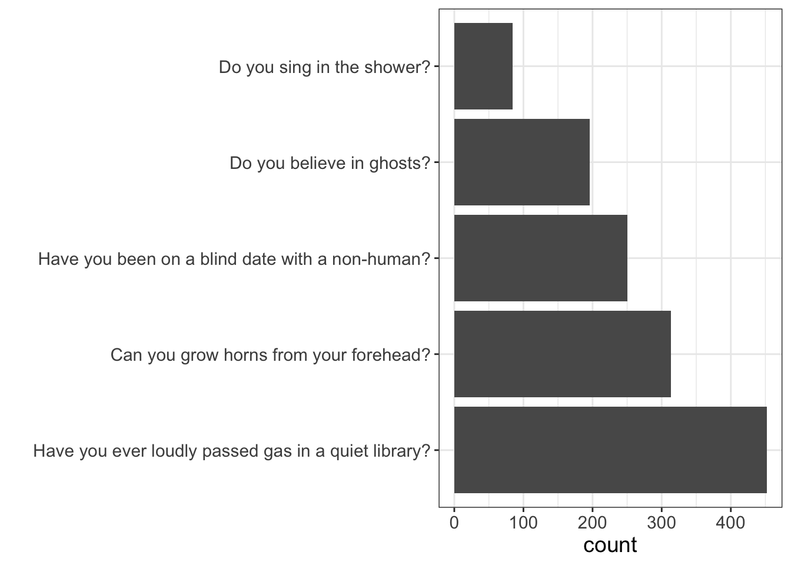
(BTW, this is still a bar graph; I just flipped the X/Y axis to make it easier to see the labels for each question).
Again, what does this MEAN?
Notice anything odd here?
Do you find it odd that so many people have reported they can grow horns from their forehead? Do you also find it odd how so few people sing in the shower? Clearly, these data are not to be believed. (Although I certainly think it’s possible, if not probable that most people have passed gas in a quiet library…speaking from personal experience).
In all likelyhood, our labels got mixed up somehow. And, this isn’t out of the ordinary. For many survey software, like Qualtrics, it’s quite common for labels to be converted into numbers. For example, “Do you sing in the shower” might be coded as 1, “Do you believe in ghosts” as 2, etc. When we then download our Qualtrics survey, we have to manually conver those numbers back into labels.
Yeah, that’s just asking for human error, including swapping labels. Barplots can often help identify this problem, especially if we expect large differences in the number of people in each category. (It also helps when we can easily judge how likely certain values are within each category, as in this example).
Small Sample Sizes
Bargraphs can help us identify problems with our data: we might see redundant labels (e.g., male, female, trans, and men), unknown/unexpected labels (e.g., male, female, trans, and pokemon), and swapped labels (e.g., more males than females in a survey of young mothers). Any of these issues require us to correct the dataset before we begin to analyze it.
Other times, however, we see things that are funky, but not because the values are wrong, but because they might present problems with how we analyze data. One of these issues is small sample sizes.
We’ll go into more detail in later chapters about why small samples sizes can be a problem for data analysis. For now, think of it this way: the smaller our sample size, the more uncertain we should be about any statistic we compute.
Let’s look at an example.
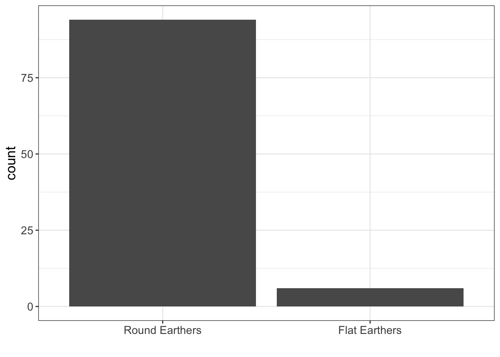
In our sample, we only have 6 Flat Earthers. Whatever information we want to compute about Flat Earthers is probably going to be pretty uncertain because we have such a small sample size.
Practice
For this practice, we’re going to be looking at the paranormal dataset. This is a dataset I simulated, but it’s more fun to pretend it’s a real dataset.
This dataset comes from a sample of 394 individuals who attended comic con. The dataset contains self-reported answers to the questions listed in the table below.
| Variable Name | Variable Meaning |
|---|---|
| conviction | Degree of conviction that the paranormal exist (likert scale) |
| fear | Self-reported rating of fear of being abducted by aliens |
| time | How many minutes they spend a month investigating the paranormal |
| kidnapped | Self-report of whether they’ve been kidnapped by aliens |
| experiences.type | Type of paranormal experiences they’ve had |
| income | Self-reported annual income |
| blogs | Number of paranormal blogs they follow |
| age | Age (in years) |
| gender | Gender |
| political | Political affiliation |
Each of these variables has at least one problem. Can you spot them?
Visualizing Bar Charts in R
It’s finally time to start doing some analyses! Yay yay yay yay!!!!
I’m not going to go into details about R. I’m going to assume you have a working understanding. If you don’t, be sure to follow my YouTube playlist on getting started with R.
First, let’s go ahead and load the flexplot package:
# load the flexplot package
require(flexplot)…then take a peak at that dataset.
# load the paranormal dataset
data("paranormal")
# take a peak at the first six rows of the dataset
head(paranormal)#> conviction fear time kidnapped experiences.type income blogs age gender
#> 1 44 6 126 yes eerie feeling 75-100K 1 27 female
#> 2 14 0 167 yes saw ghost 75-100K 1 56 female
#> 3 21 0 110 yes saw ghost 50-75K 0 25 male
#> 4 45 1 138 yes saw ghost >100K 1 27 female
#> 5 36 7 35 yes saw ghost 50-75K 2 43 female
#> 6 22 0 15 yes saw ghost 50-75K 0 56 women
#> political
#> 1 democrat
#> 2 independent
#> 3 democrat
#> 4 democrat
#> 5 democrat
#> 6 democratYou could also peak at a dataset by using view(paranormal) or str(paranormal). Whatever suits your fancy.
To create a barchart in R, it’s actually quite simple. You simply pick a categorical variable (say, kidnapped) and use the following code:
flexplot(kidnapped~1, data=paranormal)This is basically telling flexplot to visualize the univariate distribution of kidnapped, and data=paranormal is telling flexplot where to look for the variable kidnapped.
There is one problem you may run into. Remember how I said flexplot sorts the axis according to sample size? What if you have an ordinal variable? For example, let’s look at the variable called “coc.rec” in the nsduh dataset. This variable asks people how recently they had cocaine. When we visualize that, the categories are out of order:
flexplot(coc.rec~1, data=nsduh)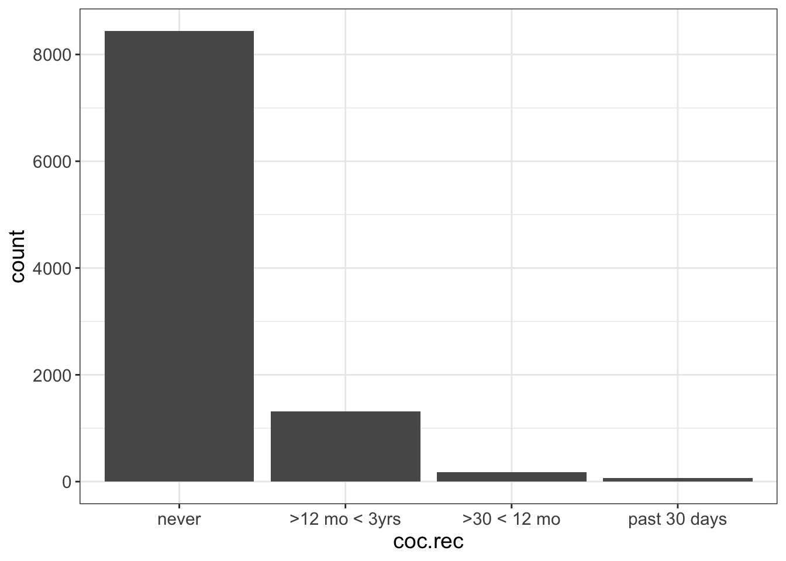
WTF is Flexplot doing? Well, it assumes the order of the cocaine frequency variable doesn’t matter. Often (if not usually) the order of categorical variables doesn’t matter (e.g., eye color). If the order doesn’t matter, then Flexplot tries to be helpful and sort the axis by the sample size.
Alas, that’s not helpful here because order does matter. So, we need to tell R that coc.rec is an ordinal variable. Here’s how we do it:
Whoa, that’s a lot of code. Lemme break it down. We’re creating a new variable called coc.rec. (Or, we’re replacing the old value of coc.rec with the new value). To do so, we’re converting the old value of coc.rec to a factor, then we’re telling what levels the factor can take (never, past 30 days, >30 < 12 mo, etc.), then we’re telling R this order is important! It will assume whatever order you gave it is the right order when you say ordered=T.
It’s important to specify the labels in the right order. Then, once we say ordered=T, R will remember that “never” comes before “past 30 days,” and so on.
Now when we visualize it, we’re good!

Now, your task is to visualize experiences.type, income, gender, and political. One of those variables will require the nominal-to-ordinal conversion.
What problems can you find?
Visualizing Bar Charts in JASP
I’m not going to go into detail here about how to install JASP and load the Visual Modeling module. If you need help, be sure to visit my YouTube playlist on getting started with JASP.
Once you have JASP up and running, be sure to load the paranormal dataset.
After that, click on the “Visual Modeling” button, then click on “Flexplot”:

Now, to visualize a barchart, simply move one of the variables in the left box into the “Dependent Variable” box:

Flexplot will then automatically generate a barchart.
There is one problem you may run into. Remember how I said flexplot sorts the axis according to sample size? What if you have an ordinal variable? For example, let’s look at the variable called “coc.rec” in the nsduh dataset. This variable asks people how recently they had cocaine. When we visualize that, the categories are out of order:

To fix it, we need to tell R that coc.rec is an ordinal variable. Unfortunately, it’s really annoying to do that in JASP. But, I did create a video on my YouTube channel that teaches you how to convert a nominal variable to an ordinal variable. Once we do that, our plot should look like this:
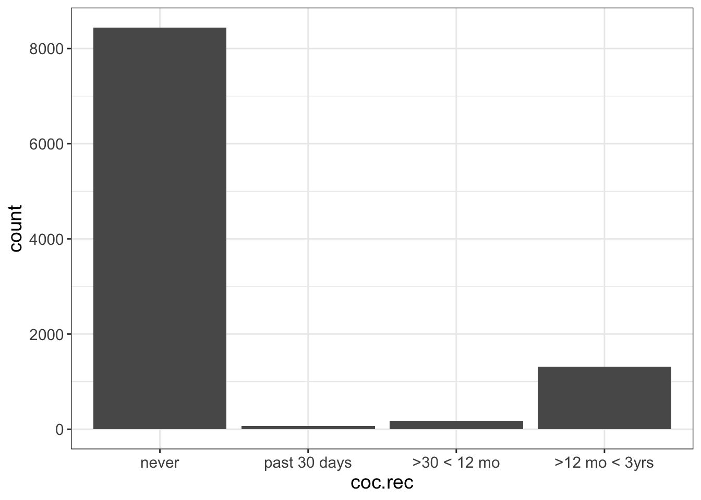
Now when we visualize it, we’re good!
So, your task is to visualize experiences.type, income, gender, and political. What problems can you find?
Numeric Variables
Whew! We made it through all that.
Now what?
Well, we’ve only covered categorical variables. There’s still pesky numeric variables to consider. Fortunately, it’s not all that much different from barcharts. Except for one minor complication…
But before we get to that, let me tell you about my lifestyle. I am an introvert at my core. I would really rather spend some time in the woods than at a party. For that reason, I live on four wooded acres of land. I have only one neighbor, and I could walk outside in my underwear without worrying about what people might think.
That’s how I like it.
Because I live nestled in the forest, one of my regular chores is cleaning up dead trees. It’s not terribly safe to walk around the woods when you have a standing dead tree. (We call those “widow makers”). So, every fall, I search out the trees that never leafed during the spring, power on the chainsaw, and pray I don’t get killed. (Seriously, cutting down trees is extremely dangerous!)
Once the tree is felled, I cut of the branches, section those branches into firewood-sized pieces, then “buck” the tree itself (which is fancy talk for cutting it into firewood-length sections). Next I split the wood. At this point, I have lots of wood to sort through.
You see, some parts of the tree are great for burning quick and hot. We call that kindling. Some parts burn really slow, but they take a lot of energy to get going. These are the logs. Then, there’s the stuff in between, meant to assist the first in transitioning from kindling to slow-burning logs.
So, now that I’ve felled an entire tree, I now have to sort the wood into three “bins.” Now, I don’t actually have bins I use, I simply put them in orderly piles. But let’s pretend I have bins. How do I decide which pieces of wood go in which bins? If the stick is smaller than two fingers, it goes in the kindling bin. If it’s thicker than two fingers, but no thicker than my forearm, it goes in the medium pile. The rest goes in the log pile.
I happen to use three bins. Some people like to use five bins. Maybe a five-bin setup might have something like this:
| Criteria | Bin |
|---|---|
| < 1 finger’s width | Tinder |
| 1-2 finger’s width | Kindling |
| 2 fingers - 1 forearm width | Small Logs |
| 1-2 forearm’s width | Medium Logs |
| 2+ forearm widths | Large Logs |
Or, you can do an 8-bin setup, or a 10-bin, etc. No matter how many bins you have, you’re not actually changing the amount of wood; instead, you’re changing how it’s sorted.
Sometimes, I have so many logs in one bin, I have to pull out another bin. Then I finally stack the bins into different piles, with the bins sorted according to size, kinda like the image below. Here, the forklift is stacking bins of the same size. When you do this, you can tell, at a glance, which number has the highest frequency. In the image below, the bin labeled “4” has the most, while #1 has the least.
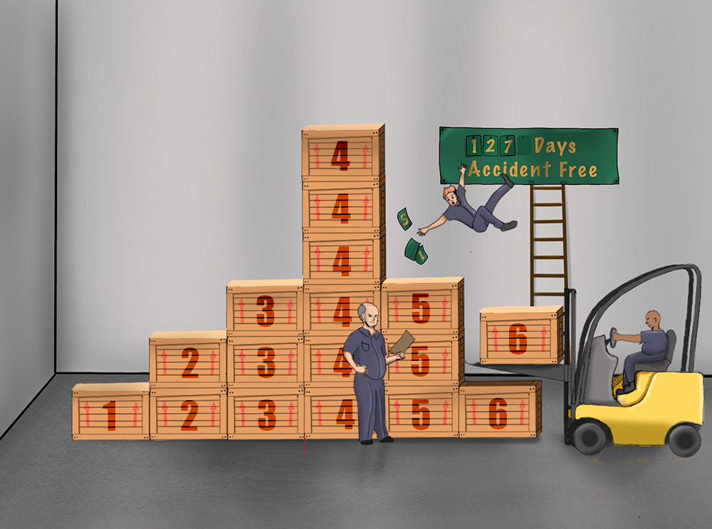
So, what does this have to do with stats? Not much. I’m just looking out the window and noticing there’s a standing dead tree right next to my house.
Except, there is one thing…
Let’s say we wanted to do a barcharts of the following numeric variable:
#> 10 11 12 14 15 16 17 18 19 20We could, as we did before, make a barchart of these data:
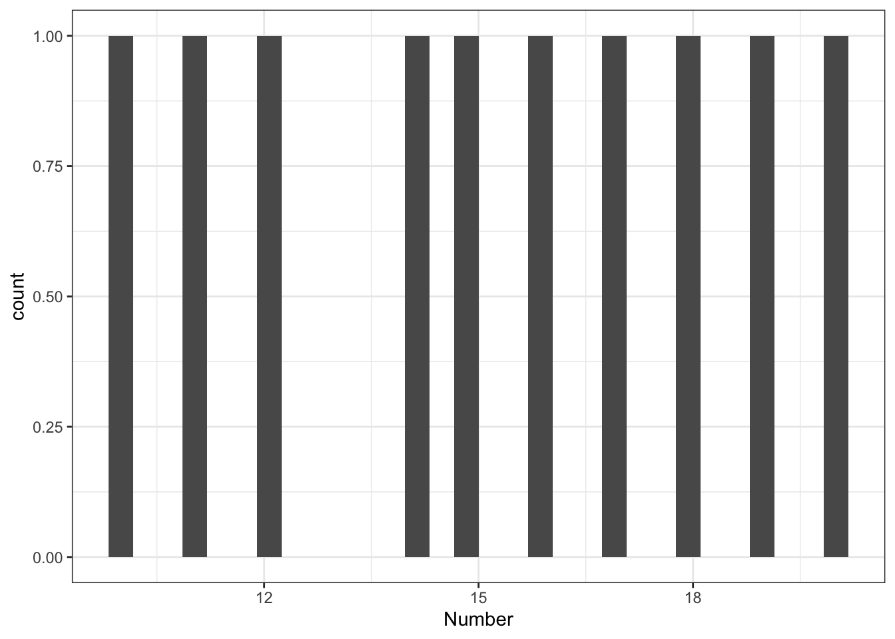 Well that’s a boring plot!
Why?
The problem we’re having is that every person in our dataset has a unique value. It wasn’t like our Harry Potter house dataset. This is very common with numeric variables. Even if each person doesn’t have a unique score, there will be very few duplicates, so a barchart doesn’t help us.
What we do instead is “bin” our data. See how I did that there? Just like I do with my firewood, we can choose to categorize our data into “bins.” For this dataset, we might decide to use three bins:
| Criteria | Bin |
|---|---|
| < 13 | 12 |
| 13-17 | 15 |
| >17 | 18 |
Now let’s look at the “barchart” of the data:
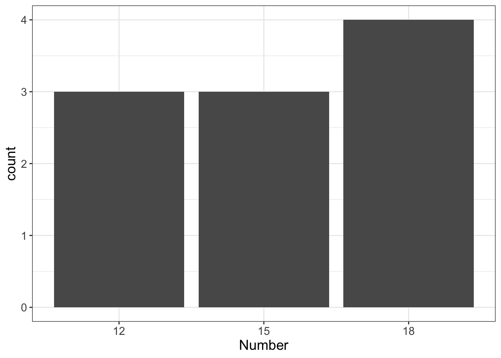
We could also choose to do 4 bins:
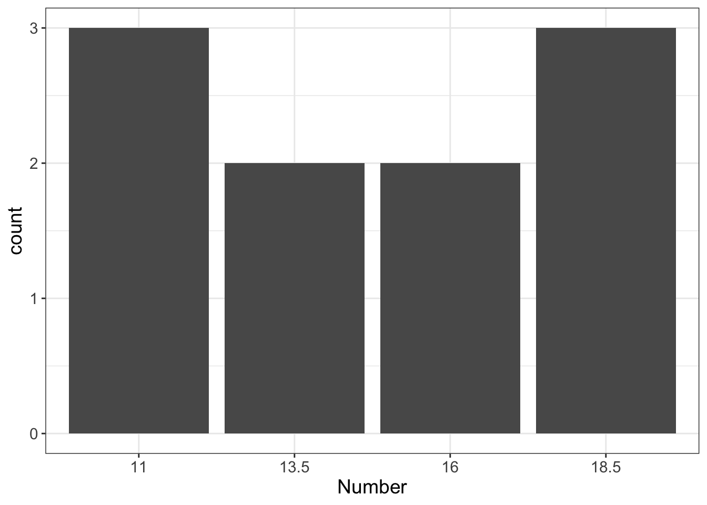
When we visualize numeric variables, we do something very similar to this. But we don’t call them “barcharts.” Instead, we call them “histograms.”
There are two key differences between barcharts and histograms:
- Histograms “bin” the values of the variables.
- Histograms have no spaces between categories, while barcharts do.
Let’s look at the second point for a minutes. I’m going to plot two variables, side by side. The first variable is categorical (therapy.type). The second is numeric (weight.loss).
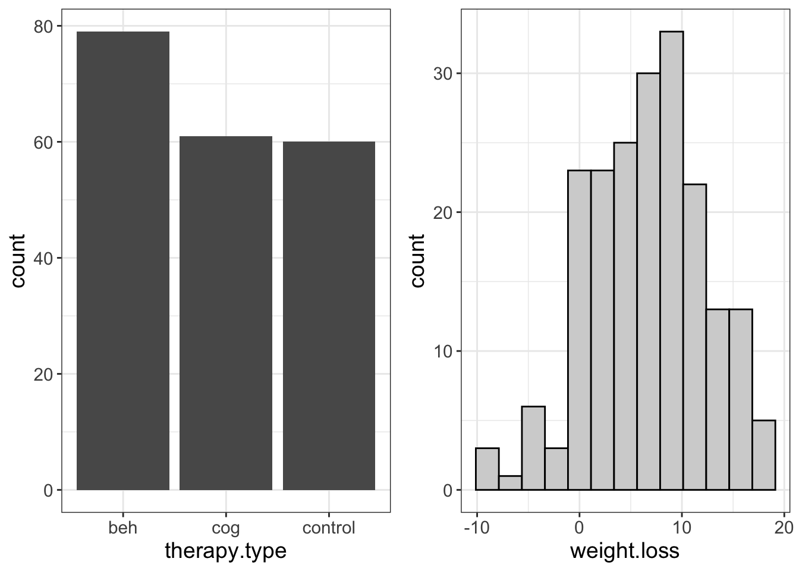
Notice there are gaps between categories on the X-axis for the categorical variable, but not for the numeric variable.
Why?
This is just a visual reminder about the type of data we’re working with. Putting a gap between categories is a visual reminder we’re dealing with discrete data; there’s nothing in between beh and cog, for example. On the other hand, for the histogram, there are no gaps. This too is a visual reminder that we are dealing with numeric data and, that the placement of our bins is arbitrary.
What to Look Out For
Just like with barcharts, there are certain things we’re looking for when visualizing histograms. What we want is a bell-curve or normal distribution. What we don’t want is skewness, zero-inflated-ness, and outliers.
Let’s go ahead and unscramble these ideas, shall we?
Actually, let’s pause for a joke. This is getting long and I’m getting bored.
What did the left eye say to the right eye?
Between us, something smells.
Normal (Bell-Curved) Distributions
Let’s start by looking at a normal distribution:
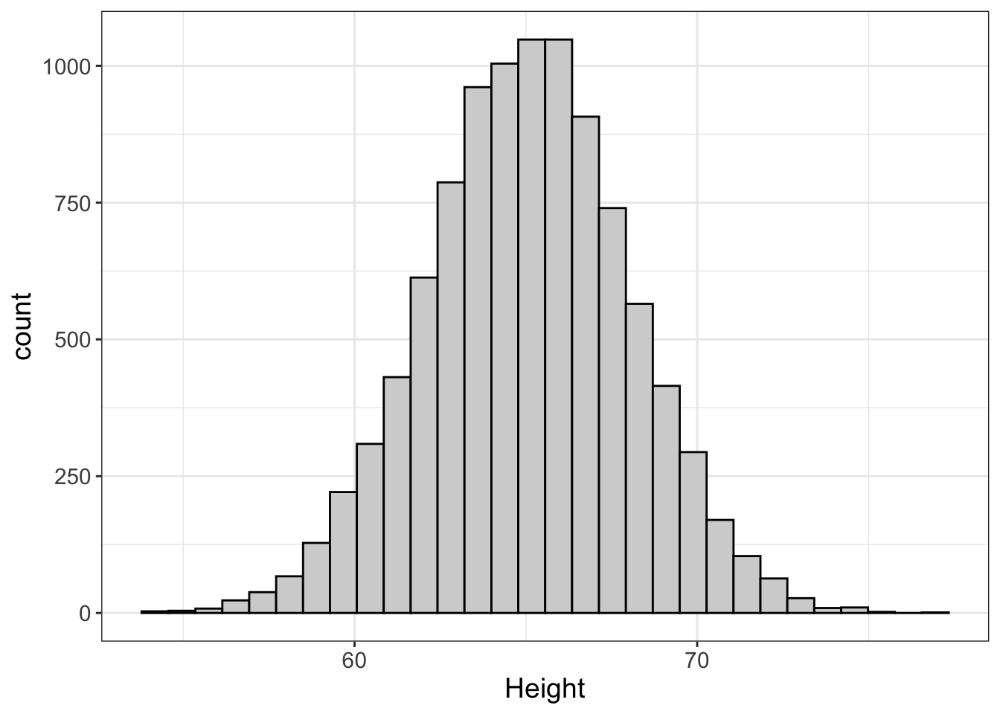
What is this telling us? It’s saying that the most frequent height is around 66 inches (because the height of the bars around 66 inches is highest…no pun intended). Also, the further you get from the center (66 inches), the fewer and fewer people there are that have these scores. That makes sense. It’s very common to see people who are 66 inches (5’6”). It’s very rare to see someone 79 inches (6’5”), or someone 58 inches (4’10”).
Notice how that plot looks like one of those big bells they used to ring to summon the fire department? That’s why we call it the “bell-curved” distribution. This is what we want. Why?
Well, bells are cool. So there’s that.
But also for other reasons. The answer(s) are a bit technical and we’ll get into that more in later chapters. But let’s put it this way: when we have normal distributions, it’s easy to guess what someone’s score is; we simply guess they have a score in the center.
It turns out, nature likes normal distributions…
- Most people are of average intelligence. Very few people are geniuses, and very few people are dumber than rocks.
- Most adults have hearts that weigh around 325 grams. Very few adults would survive a heart weighing less than 200 grams or more than 600 grams.
- Most people’s resting heart rate is around 70 beats per minute. Very few people’s hearts average less than 50 and very few people’s average more than 120.
Why does nature like normal distributions? Because of natural selection, mostly. If one’s heart is too big, it expends a lot of energy to pump and will be more likely to lead to heart attacks. If one’s heart is too small, it’s going to struggle to keep up with the body’s need for renewed blood.
Statisticians are like nature. We like normal distributions too. It just makes things easier down the road.
Outliers
What is an outlier? Well, it’s a datapoint that is way out there. Let’s take a look, shall we?
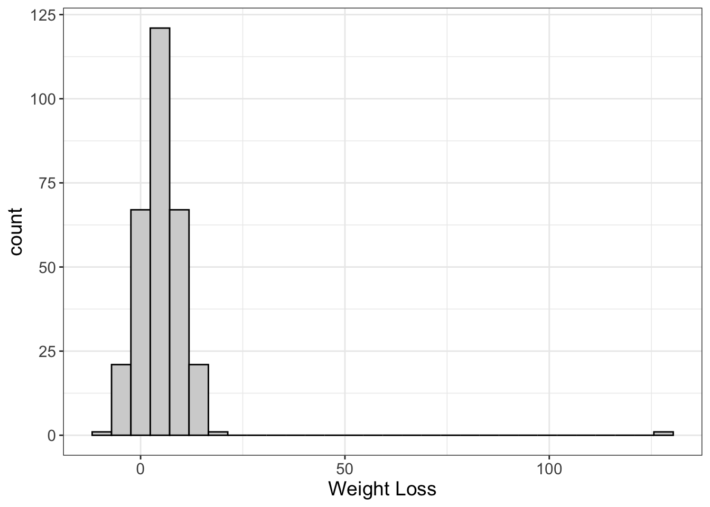
Here we have a histogram showing the weight loss of 300 people. Most people loose around 5 pounds, but some gain weight, and some lose more. But there’s one person who lost 130 pounds! (For my non-American friends, that’s 59 kg). Notice how that oulier really squishes the other values together in order to fit that outlier in the same graph. That’s quite common (and quite annoying).
What do we do when we encounter an outlier? First, we ask ourselves if that particular value is possible. So, is it possible someone lost 130 pounds? Yes! It’s very rare, but it has been known to happen.
But sometimes we have situations where a value isn’t possible. Look at the graph below.
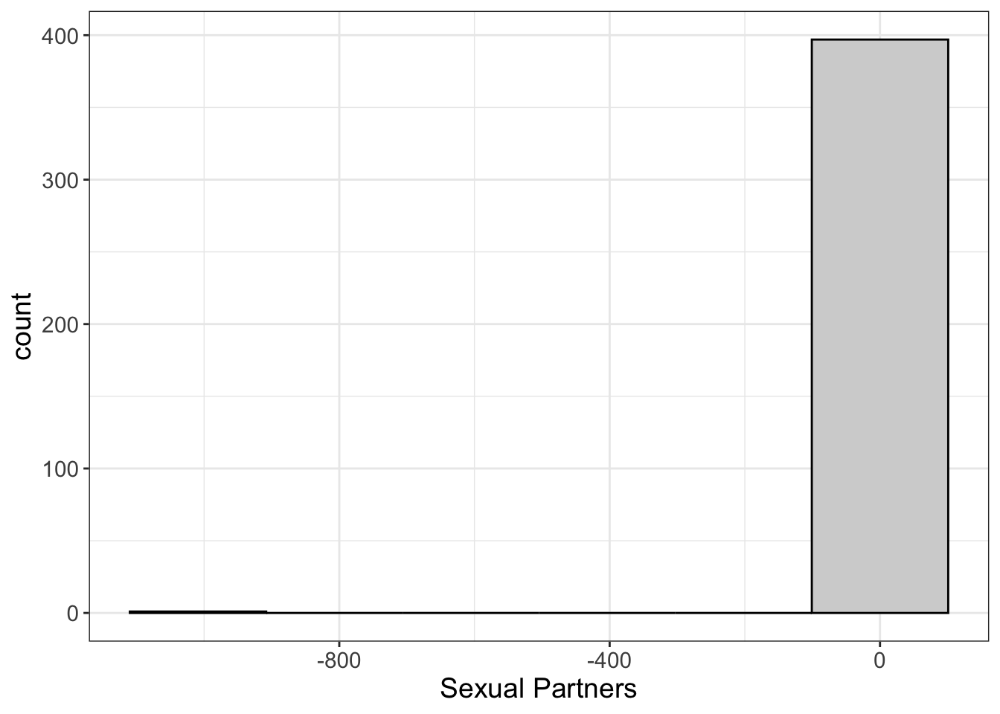
Once again, we see that the histogram has squished the \(X\) axis, making it hard to see the distribution of scores around 0.
What’s going on here? Well, we have someone reporting -999 sexual partners. Is that possible? How do you unsex a person?
It doesn’t make sense. This is clearly a situation where the outlier doesn’t make sense. Some stats programs (e.g., SPSS) require you to put a symbol in for missing data. One common “symbol” people use is the number -999. That’s all well and good if the computer knows -999 means missing. But if you try to then export your data into R, you’re going to have some problems because R’s going to treat it as a number!
Outliers can really screw things up because they tend to pull statistical estimates away from the most frequent scores. Fortunately, outliers become less and less of a problem as the sample size increases.
Skewness
Not all distributions are normal. Some are not quite symmetric. Let’s look at an example:
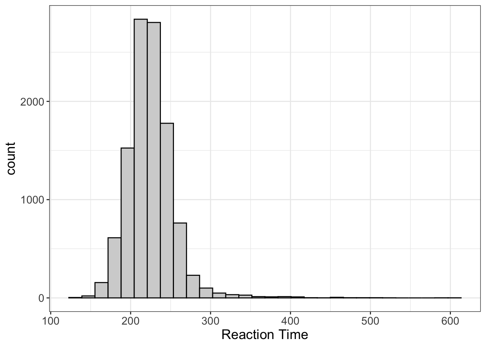
What’s happening here? Here we have the distribution of reaction time. There’s a very clear lower limit; you can’t react before the stimuli occurs. (Unless you’re psychic. If so, props to you.) However, there’s no upper limit to reaction time. Just ask Flash the Sloth:
In these situations, we expect the distribution to not be symmetrical. Instead, we say it’s “positively skewed.”
But we can also have negative skew:
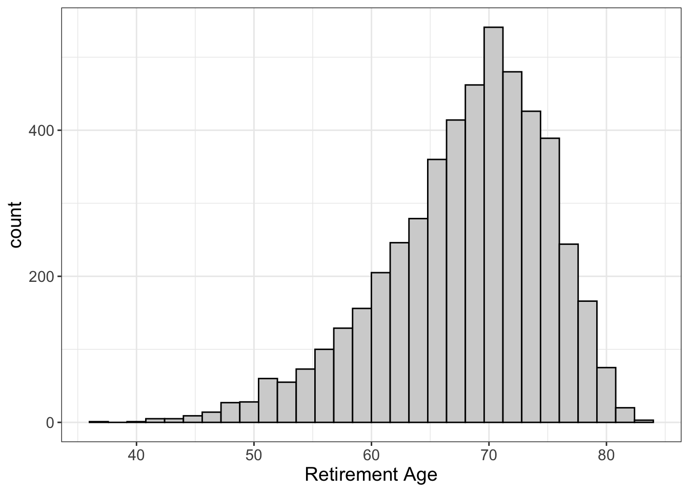
In the previous example, we had a lower limit we could not pass (reaction time < 0). Here we have an upper limit; humans can only live so long.
One way to think about skewness is that it’s a pattern of having outliers. Remember, an outlier means we have one (or maybe a handful) of scores that are way beyond the center of the distribution. Skewness means we have more than just a handful of scores; instead, we have a pattern of scores that are outliers, and those become less likely as we go further from the center of the data.
BTW, I’m embarrassed to admit, but I often get positive and negative skew mixed up. The easiest way I’ve found to keep them straight is to remember that the tail points in the direction of the skewness. So, if the tail points toward the negative side, it’s negative skew. If the tail points toward the positive side, it’s positive skew.
We’ll talk more about why skewness is a problem throughout this book. For now, I’ll refer to my previous reason: for skewed distributions, it’s harder to guess what someone’s score is going to be.
Zero-Inflated Data
Zero-inflated data are just an extreme case of skewed data. It turns out, the graphs we saw earlier with positive/negative skew actually aren’t that big of a deal. Most models we use can deal with them.
They cannot deal with zero-inflated data.
Let’s look at an example, shall we?
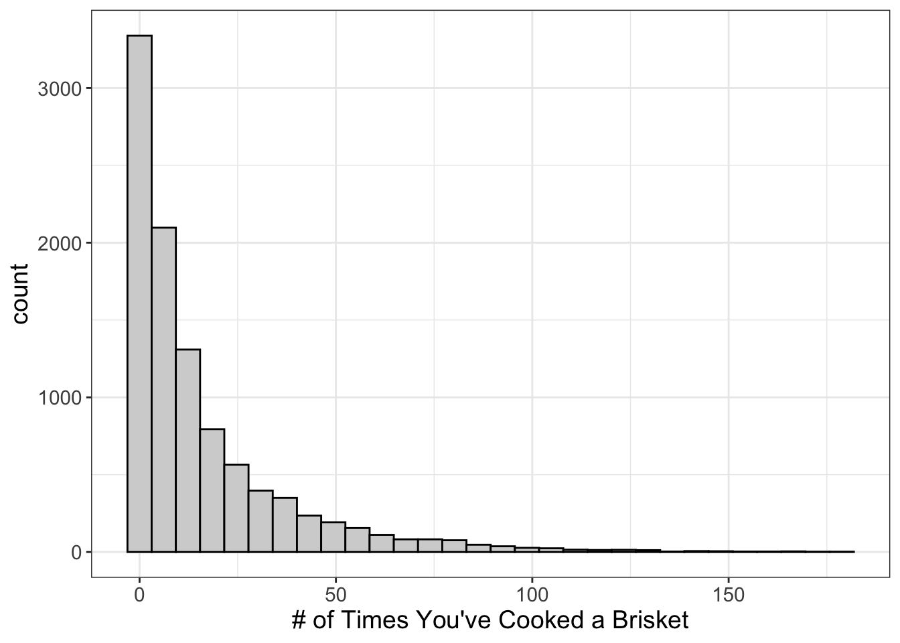
What does this graph tell us? It suggests most people haven’t ever cooked a brisket. (That’s a shame really. Smoked brisket is to die for). Fewer have cooked one. Even fewer have cooked two, and so on. We call this “zero-inflated.”
Why?
Because the score of zero is inflated. (Did it really need to be said?)
Lots of things we might study are zero-inflated, including:
- Number of times someone’s been incarcertated
- Number of times someone’s been in a serious car accident
- Number of times one has kissed Brad Pitt
Notice what’s in common among all these? They’re all counts!
When we have count data, it’s not uncommon to also have zero-inflated data.
When the underlying distribution is zero-inflated, the traditional statistics most people use will have serious problems.
So, if you have zero-inflated data, you can’t use traditional statistics.
Bimodal data
Ah, bimodality. Odd distribution, you are.
What does it look like? Glad you asked…
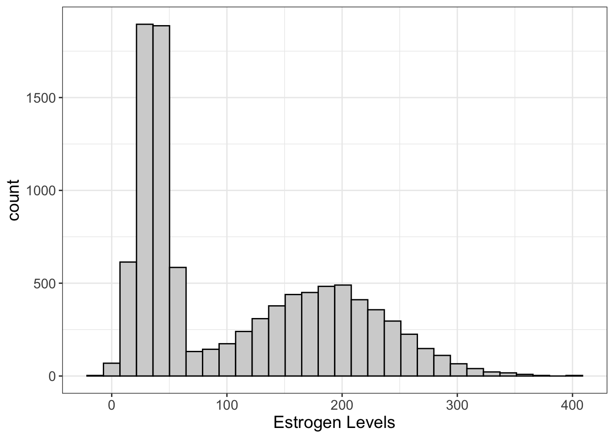 There’s something called the “mode” which we’ll talk about next chapter. Long story short, the mode is the most frequently occurring score. In the image above, we seem to have one primary mode (around 35) and a secondary around 185.
Why is that a problem? Eventually, we’re going to try to ask an important question…
“What is the most likely score?”
Bimodal distributions make that hard to answer. Is it the average? Well, no, because the average often falls between the two modes, where there aren’t that many scores. Likewise for the median. (We’ll talk more about the mean and median in the next chapter).
Maybe you want to say it’s the score with the highest frequency (which, again, we call the mode). Well, you have two modes. So which one do you choose?
Yeah, so things get a little hairy.
But, this isn’t always a problem, as we’ll find out later. Bimodal data can screw things up, but it’s not a guarantee. What bimodal data should do is cause you to wonder.
Why?
Because nature doesn’t often work that way. Often, when we see bimodal data, that simply means we have accidentally merged two underlying variables into one (like males and females in our example). Maybe this is on purpose. Maybe not. Either way, it ought to cause us to think a bit about what this means.
Capische?
Visualizing Histograms in R
Ready for more analyses? I know you are!!!!!
By the way, Flexplot is pretty amazing. Remember how we visualized barcharts?
flexplot(y~1, data=d)Well, we visualize histograms using the exact same code.
“Well then,” you might say, “how do I tell flexplot to visualize a histogram instead of a barchart?”
You don’t. Flexplot is smart enough to figure that out for you.
But, alas, sometimes flexplot makes a mistake. Sometimes when you import a numeric variable into R, it converts it to a nominal variable. For example, let’s say we create a dataset like this:
data = data.frame(some_numbers = c("1", "2", "2", "3", "3", "3", "4", "4", "5"))Notice that we’re surrounding the numbers within quotes. That’s a fancy way of telling R these numbers are actually nominal. You wouldn’t actually do that, but sometimes it happens. For example, let’s say you have a dataset like this:
| numbers | categories |
|---|---|
| 10 | B |
| 11 | A |
| missing | E |
| 10 | D |
| 12 | C |
Notice the “numbers” column has a bunch of numbers, but it also has a value labeled “missing.” R will notice that and assume all the values should be nominal. Oops!
Fixing it is easy. We just have to convert it to numeric. But, to be safe, we ought to convert it to a character (nominal) variable first.
data$number = as.numeric(as.character(data$number))Your job is to plot the numeric variables in the paranomal dataset. Be forewarned, one of those variables is treated as a nominal variable!
Factors versus character variables
In an earlier chapter, I mentioned the difference between nominal and ordinal variables. R actually has three different categorical variable types: character, factor, and ordered factor. The only difference between a character and factor is that a character can be any value, whereas a factor can only take on certain values. For example, if you have only three groups (e.g., Treatment A, Treatment B, and Control), you might want to specify that variable is a factor. This prevents certain values from being added to the dataset. For example, if you tried to add a row to the dataset called “TRT A,” R will throw an error.
Why is this important? Most of the time, it isn’t. But, underlying a factor, R assigns a number. So, if we have Treatment A, Treatment B, and Control, R actually treats the value Treatment A as 1, Treatment B as 2, and control as 3. (Well, technically, it will probably call Control 1 because it sorts the variable values alphabetically).
So, let’s say we have a variable called var and its values are “11,” “12,” and “13”. If we used the R code var = as.numeric(var), it would return 1, 2, 3. Why? Because it’s going to return the underlying number behind the factor. That’s why you have to first convert it to a character, then convert it to a number.
It’s kind of annoying, actually.
Visualizing Histograms in JASP
Ready for more analyses? I know you are!!!!!
By the way, Flexplot is pretty amazing. Remember how we visualized barcharts by just moving categorical variables into the Dependent Variable box?

Well, we visualize histograms the same way
“Well then,” you might say, “how do I tell flexplot to visualize a histogram instead of a barchart?”
You don’t. Flexplot is smart enough to figure that out for you.
But, alas, sometimes flexplot makes a mistake. Sometimes when you import a numeric variable into R, it converts it to a nominal variable. For example, in the paranormal dataset, notice jasp treats the “blog” variable as an ordinal variable:

This is actually quite common in JASP for two reasons. First, any variable that has less than 20 unique values, JASP will automatically treat as a nominal variable. Second, if any values for a column are nominal, JASP will treat the entire column as nominal. For example, let’s say you have a dataset like this:
| numbers | categories |
|---|---|
| 14 | A |
| 2 | E |
| missing | D |
| 17 | B |
| 20 | C |
Notice the “numbers” column has a bunch of numbers, but it also has a value labeled “missing.” JASP will notice that and assume all the values should be nominal. Oops!
Fixing it is easy. In either case, we just have to convert it to numeric. We do this by clicking the symbol next to the variable:

Then we select “Scale.” Easy peasy!
Your job is to plot the numeric variables in the paranomal dataset. Be forewarned, one of those variables is treated as a nominal variable!